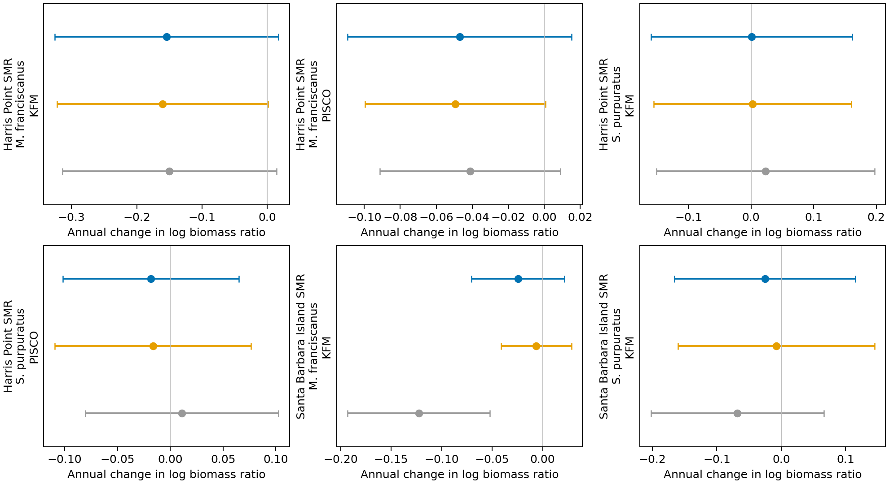

All 54 recent donor records resolved. Excluded physical sites removed. Paper unchanged.
| corrected_slope | low | high | n_years | original_slope | historical_only_slope | recent_increment | total_change | |
|---|---|---|---|---|---|---|---|---|
| series_id | ||||||||
| Harris Point SMR|M. franciscanus|KFM|Bio | -0.15425 | -0.32559 | 0.01710 | 18 | -0.14985 | -0.16047 | 0.00622 | -0.00439 |
| Harris Point SMR|M. franciscanus|PISCO|Bio | -0.04704 | -0.10919 | 0.01510 | 15 | -0.04120 | -0.04947 | 0.00243 | -0.00584 |
| Harris Point SMR|S. purpuratus|KFM|Bio | 0.00056 | -0.16004 | 0.16115 | 18 | 0.02314 | 0.00255 | -0.00199 | -0.02258 |
| Harris Point SMR|S. purpuratus|PISCO|Bio | -0.01842 | -0.10187 | 0.06503 | 15 | 0.01098 | -0.01640 | -0.00203 | -0.02940 |
| Santa Barbara Island SMR|M. franciscanus|KFM|Bio | -0.02442 | -0.07048 | 0.02165 | 17 | -0.12253 | -0.00637 | -0.01805 | 0.09812 |
| Santa Barbara Island SMR|S. purpuratus|KFM|Bio | -0.02522 | -0.16572 | 0.11528 | 17 | -0.06811 | -0.00757 | -0.01765 | 0.04289 |

Gray: original; orange: historical corrections; blue: all corrections. Conditional 95% temporal intervals; shared-size and allometric uncertainty remain.